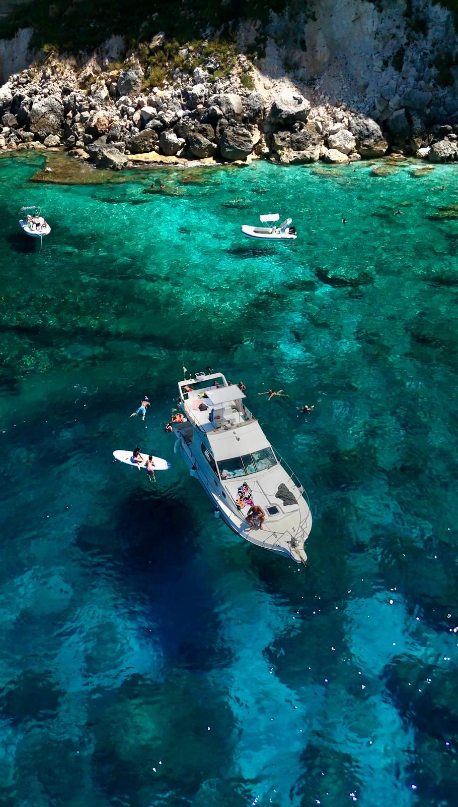
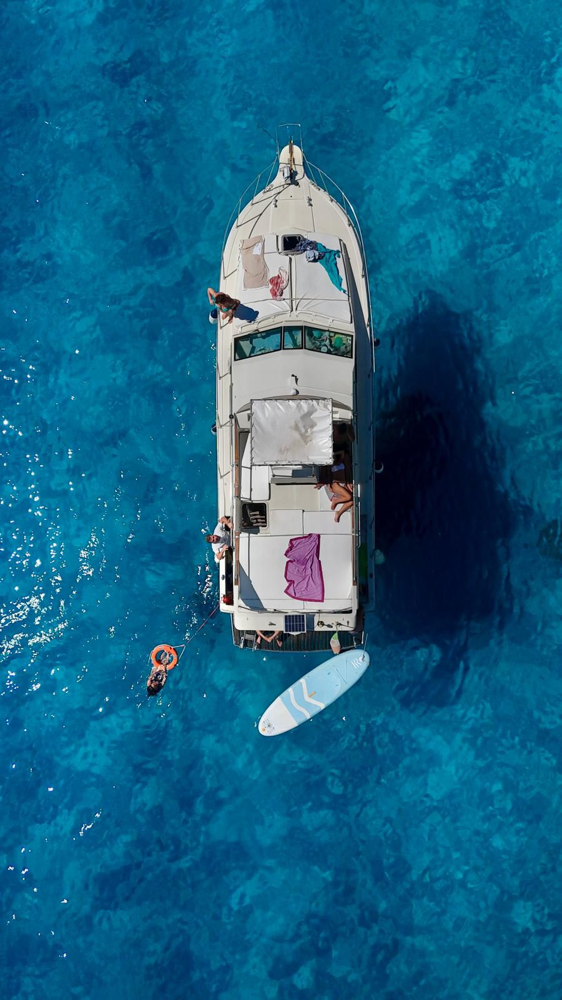
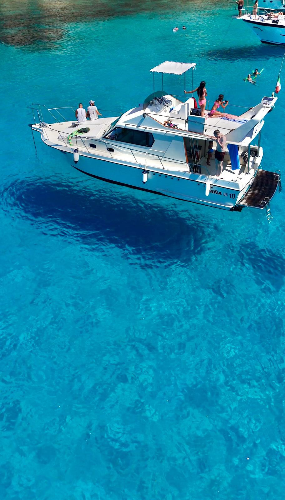

Scopri il mare
a bordo di Niña
Calette raggiungibili solo dal mare, acque cristalline, tramonti da sogno. Un'isola da vivere fino in fondo.
☎ Prenota ora – 333 811 8541Chi siamo
Un'isola
tutta da scoprire
La gita in barca è un'esperienza che permette di scoprire nuovi paesaggi dal mare, immergendosi nella tranquillità delle acque e nella bellezza della natura circostante.
Si parte dal porto con una vista panoramica sulle coste e calette attorno all'isola. Lungo il tragitto ci si gode il panorama, si ascolta il rumore delle onde e ci si immerge nelle acque più belle del Mediterraneo.
È possibile organizzare anche gite esclusive su richiesta.
Le nostre esperienze
Due gite,
due emozioni diverse

Le calette più belle dell'isola
Partenza alle 10:00 per una giornata indimenticabile alla scoperta delle calette più belle, molte raggiungibili solo in barca: la Baia della Tabaccara, Cala Pulcino e la costa nord (in base alle condizioni meteo). Soste per nuotare nelle acque cristalline, pranzo con specialità del posto e bevande incluse. Rientro in porto verso le 17:00.
Il tramonto direttamente dal mare
Partenza indicativa dalle 18:00, con rientro dopo il tramonto (l'orario varia con il passare delle settimane in estate). Tramonto direttamente dal mare accompagnato da un aperitivo con spritz e stuzzichini, buona musica e — con un po' di fortuna — la possibilità di avvistare delfini e tartarughe. Sosta bagno serale, rientro in porto a sera inoltrata.

Tutta la barca per te
Vuoi un'esperienza su misura? È possibile organizzare gite esclusive per gruppi o famiglie su preventiva richiesta. Scegli mete, orari e cosa includere a bordo. Contattaci per personalizzare la tua giornata in mare.
Galleria
Lampedusa,
vista dal mare




Domande frequenti
Tutto quello
che vuoi sapere
Le gite partono dal Porto Nuovo di Lampedusa. Contattaci al 333 811 8541 per il punto di ritrovo esatto.
La gita giornaliera dura circa 7 ore: partenza alle 10:00 e rientro in porto verso le 17:00. Pranzo con specialità del posto e bevande sono inclusi.
Le mete principali sono la Baia della Tabaccara, Cala Pulcino e la costa nord dell'isola — luoghi raggiungibili solo dal mare, in base alle condizioni meteo.
Aperitivo con spritz e stuzzichini, buona musica, sosta bagno serale e la possibilità di avvistare delfini e tartarughe. Partenza ~18:00, rientro dopo il tramonto.
Sì. Organizziamo gite esclusive per gruppi e famiglie con itinerario su misura. Contattaci via WhatsApp per un preventivo personalizzato.
Contattaci via WhatsApp o telefonando al 333 811 8541. La disponibilità è limitata: ti consigliamo di prenotare con anticipo, specialmente in luglio e agosto.
Le gite si svolgono prevalentemente da maggio a ottobre, con picco in luglio e agosto. Contattaci per verificare la disponibilità nella tua data.
Prenota ora
Pronti a
salpare?
Per prenotazioni, costi e informazioni contattaci direttamente. Disponibilità limitata — meglio prenotare in anticipo.